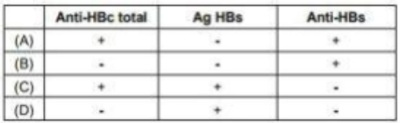

Questão 1 · HCVRNA · Interpretação dos marcadores sorológicos · AntiHCV · 4000126159Uma paciente feminina, 45 anos, procura a unidade básica de saúde, relatando preocupação em fazer o exame do HIV, pois descobriu que o seu ex-parceiro adoeceu. Você atende e acolhe a paciente, verifica seu histórico de saúde e queixas atuais e solicita alguns exames. Quando a paciente retorna, os resultados são os seguintes: anti-HIV não reagente, HBsAg não reagente, anti-HBc IgG não reagente, anti-HCV reagente, anti-HBs reagente e VDRL não reagente. Qual a sua interpretação e a próxima conduta?
A Hepatite B resolvida – tranquilizar a paciente.
B Hepatite B resolvida – solicitar reforço de vacina.
C Hepatite B em fase de resolução – observar evolução clínica.
D Hepatite C – encaminhar para iniciar tratamento.
E Hepatite C suspeita – solicitar exame confirmatório.
Questão 2 · Fases clínicas · 4000113981Em relação às fases da infecção pelo vírus da hepatite B, é CORRETO afirmar que:
A A fase imunotolerante é caracterizada por negatividade de HBeAg e baixos índices deHBV-DNA sérico, indicativos de replicação viral.
B Na fase imunorreativa, o HBeAg é reagente e ocorrem maiores índices de HBV-DNAsérico, indicativos de maior replicação viral.
C O estado de portador inativo é caracterizado por níveis muito baixos, ou até mesmoindetectáveis de HBV-DNA sérico, com normalização das aminotransferases.
D A fase de reativação pode surgir antes do período inativo, quando param de ocorrermutações na região pré- core e/ou core-promoter do vírus.
Questão 3 · Marcadores sorológicos · Interpretação dos marcadores sorológicos · 4000095867No diagnóstico da hepatite aguda pelo vírus B, apenas considerando o aspecto clínico não é possível identi car o agente etiológico, sendo necessária a realização de exames sorológicos. Sobre os marcadores sorológicos do vírus B, analise as assertivas e identifique com V as verdadeiras e com F as falsas; ( ) HBeAg positivo indica tendência de cura da doença. ( ) O HbsAg positivo por mais de seis meses é preditivo de evolução crônica. ( ) Anti-HbcIgM indica infecção aguda, porém a sua persistência tem valor preditivo de gravidade. A alternativa que contém a sequência correta, de cima para baixo, é
A V V V
B V V F
C F V V
D F V F
E F F F
Questão 4 · Prof ilaxia da transmissão vertical · 4000073790A hepatite B tem grande importância obstétrica pela elevada taxa de transmissão vertical, gravidade da infecção neonatal e possibilidade de prevenção. Sobre esse tema, marque a opção CORRETA:
A Gestante HBsAg positivo e HBeAg positivo deve receber tenofovir a partir de 28 semanas até 4 semanas pós- parto.
B A via de transmissão ao recém nascido é o parto, havendo indicação de cesariana eletiva nas gestantes com carga viral HB-DNA acima de 10⁷/ml.
C Recém-nascido de mãe HBsAg positivo e HBeAg negativo pode ser tratado apenas com vacinação, sendo a primeira dose aplicada nas primeiras 12 horas pós parto.
D Puérpera HBsAg positivo deve ser orientada a suspender a amamentação até o recém nascido completar o esquema de vacinação.
Questão 5 · Prof ilaxia da transmissão vertical · 4000062474Paciente 20 anos, G3P1A1, vem para avaliação pré-natal na 36 sem de gestação. Veri cou-se que o HBsAg e o anti-HBcAg apresentavam-se positivos, confirmando o diagnóstico de portadora crônica de hepatite B. Em relação a este caso é correto afirmar:
A Devido ao alto risco de transmissão vertical, deve-se optar pelo parto cesáreo imediato.
B A gestante deve ser submetida à profilaxia, recebendo a vacina contra hepatite B +profilaxia medicamentosa com tenofovir.
C O recém-nascido deve receber a vacina contra hepatite B e imunoglobulina preferencialmente nas primeiras 12h pós parto.
D O aleitamento materno está contraindicado.
Questão 6 · Marcadores sorológicos · Interpretação dos marcadores sorológicos · 4000039254Gestantes que tem hepatite B com alta replicação viral, e, portanto, altamente infectantes, são as que apresentam positividade para o marcador:
A HBsAg.
B HBeAg.
C Anti-HBs.
D Anti-HBc.
Questão 7 · Prof ilaxia pósexposição · Vacinação · 4000034429Auxiliar de enfermagem de 28 anos foi vítima de acidente com material pérfurocortante no cento cirúrgico. A pro ssional não sabe precisar sobre sua vacinação contra hepatite B, mas o exame pré-admissional realizado há um ano mostrou dosagem de antiHBs de 15mUI/mL. O teste rápido do paciente-doente foi reagente para hepatite B. A conduta MAIS ADEQUADA para essa situação nesse momento é:
A indicar vacinação para hepatite B.
B notificar o sistema de informação de agravos de notificação (SINAN).
C prescrever imunoglobulina humana anti-hepatite B.
D solicitar dosagens seriadas das transaminases.
Questão 8 · Marcadores sorológicos · Interpretação dos marcadores sorológicos · 4000033250Zilma, 25 anos, procura atendimento ambulatorial para mostrar resultados de exames. Ela já realizou tatuagens anteriores e teve dúvidas em relação ao risco de transmissão de hepatite viral B, sendo realizados os seguintes exames: anti-HBe e anti- HBc (IgG) reagentes. Encontra-se assintomática, sem histórico prévio de doença hepática. Diante dessas sorologias, as seguintes hipóteses diagnósticas são possíveis antes da avaliação laboratorial complementar, exceto:
A A paciente pode ser portadora do vírus da hepatite B.
B Pode significar que a paciente teve contato e conseguiu fazer o clareamento espontâneo do vírus da hepatite B.
C Pode significar hepatite B crônica com baixa replicação viral.
D Se esta paciente apresentar o HBsAg não reagente e o HBV-DNA quantitativo por PCR indetectável significa que a paciente nunca teve contato com o vírus da hepatite B.
E Não posso considerá-la imunizada através de vacinação contra o vírus da hepatite B.
Questão 9 · Hepatite B aguda benigna · Hepatite B aguda · Interpretação dos marcadores sorológicos · 4000031654Um homem de 32 anos é atendido em um pronto-atendimento de uma cidade litorânea, enquanto passava férias na companhia de alguns amigos, em período de carnaval. A queixa principal é de que estava cando amarelo e na anamnese surgiram dados de sintomas prodrômicos tais como náuseas, inapatetência, mal-estar inespecí co de início há 1 semana. Não estava confuso nem apresentava outras alterações do exame neurológico. Nega episódios prévios semelhantes. No exame físico inicial: paciente ictérico, sem estigmas de insu ciência hepática, sem ascite. O fígado estava doloroso e palpável a 4 cm do rebordo costal direito. Exames laboratoriais iniciais demonstraram: Bilirrubinas totais de 6.8 mg/dL (VR até 1.2) com bilirrubina direta de 6; gama-GT 30 (VR até 60); Fosfatase alcalina de 192 (VR até 110); aspartato aminotrasferase (AST) 140 (VR até 42) e alanina aminotransferase (ALT) de 160 (VR até 44). Albumina 4.3 (VR > 3.5), RNI de 1. Sorologias realizadas: HbsAg reagente – Anti-HBC IgM reagente – anti-HbsAg não reagente – Anti-HbeAg não reagente - Anti-HAV IgG reagente – Anti-HCV não reagente – Anti-HIV 1 e 2 não reagente. Nesse caso, qual a conduta inicial mais adequada?
A Imunoglobulina hiperimune.
B Seguimento clínico.
C Tratamento antiviral de início imediato.
D Biopsia hepática.
Revisar: possível letra faltando em enunciado
Questão 10 · Marcadores sorológicos · Interpretação dos marcadores sorológicos · 4000018336Enfermeiro, 39 anos de idade, hígido e sem antecedentes de hepatites virais, recebeu 3 doses de vacina contra hepatite B. O padrão sorológico mais provável é:
A AgHBs(−, AntiHBc(total(−, AntiHBcIgM(−, Anti-HBs(+
B AgHBs(+, AntiHBc(total(+, AntiHBcIgM(+, Anti-HBs(+
C AgHBs(+, AntiHBc(total(+/−, AntiHBcIgM(+/−, Anti-HBs(+
D AgHBs(−, AntiHBc(total(+, AntiHBcIgM(−, Anti-HBs(−
E AgHBs(−, AntiHBc(total(−, AntiHBcIgM(+, Anti-HBs(+
Questão 11 · Marcadores sorológicos · Mutante précore · Interpretação dos marcadores sorológicos · 4000013172Paciente do sexo masculino, de trinta e cinco anos de idade, procurou atendimento médico devido a achado de hepatite viral em screening de doação de sangue. Ele apresentava a seguinte sorologia: AgHBs positivo, anti-HBc total positivo, anti- HBs negativo, AgHBe negativo e anti-HBe positivo. Enzimas hepáticas normais e ultrassonogra a de abdome sem alterações. Com relação a esse caso clínico, julgue o item que se segue. Indivíduos com idade acima de trinta e cinco anos e com carga viral>2.000 cópias por mL são classificados como portadores inativos.
A Certo.
B Errado.
Questão 12 · Coinf ecções · Hepatites Virais · 4000006887Considerando que os vírus das hepatites B, C e Delta e o HIV apresentam formas de transmissão em comum, podemos apenas determinar como adequado o item:
A Co-infecção com outros vírus não pode ocorrer e afetar de forma significativa a história natural da doença.
B A presença concomitante desses agentes infecciosos não agrava, somente acelera a evolução da hepatite.
C A presença concomitante desses agentes infecciosos agrava a atividade necro inflamatória.
D O principal fator associado à evolução para cronicidade da infecção pelo vírus da hepatite B é a via que a infecção ocorre.
Questão 13 · Marcadores sorológicos · Interpretação dos marcadores sorológicos · 4000002902O diagnóstico sorológico da hepatite crônica pelo vírus B é confirmado pelo achado:
A HBsAg-, anti-HBc+, anti-HBs+
B HBsAg+, anti-HBc-, anti-HBs+
C HBsAg+, anti-HBc+, anti-HBs-
D HBsAg-, anti-HBc+, anti-HBs-
E HBsAg-, anti-HBc-, anti-HBs+
Questão 14 · Coinf ecção HIVHepatite B · 4000001251Os pacientes co-infectados pelo HIV que desenvolvem hepatite aguda pelo HBV têm cinco a seis vezes mais chance de se tornarem portadores crônicos do HBV, quando comparados a indivíduos soronegativos para o HIV. Assim, podemos aceitar que:
A A história da infecção pelo vírus da hepatite B é melhorada pelo HIV.
B A história natural da infecção pelo vírus da hepatite B não é alterada pelo HIV.
C A história natural da infecção pelo vírus da hepatite B é independente do HIV.
D A história natural da infecção pelo vírus da hepatite B é alterada pelo HIV.
Revisar: possível letra faltando em enunciado
Questão 15 · Interpretação dos marcadores sorológicos · 4000124662Gestante no início do pré-natal apresenta os seguintes resultados sorológicos de hepatite B: HBsAG: positivo; Anti-HBs: negativo; Anti-HBc: positivo; IgM anti-HBc: positivo. O diagnóstico é:
A Negativo para hepatite B e positivo para hepatite C.
B Imunidade para hepatite B adquirida por vacina.
C Infecção aguda por hepatite B.
D Imunidade para hepatite B adquirida por doença.
Questão 16 · Interpretação dos marcadores sorológicos · 4000113556Um indivíduo vacinado contra o vírus da hepatite B, com boa resposta vacinal, deve apresentar qual perfil sorológico?
A AgHBs: +; Anti-HBs: +; AgHBe: -; Anti-Hbe: -; Anti-HBc: +
B AgHBs: +; Anti-HBs: -; AgHBe: -; Anti-Hbe: -; Anti-HBc: -
C AgHBs: -; Anti-HBs: +; AgHBe: -; Anti-Hbe: -; Anti-HBc: -
D AgHBs: -; Anti-HBs: -; AgHBe: -; Anti-Hbe: -; Anti-HBc: +
E Nenhuma das anteriores
Questão 17 · Mutante précore · Interpretação dos marcadores sorológicos · 4000101263Paciente sexo feminino, previamente saudável, procura ambulatório de Gastro-DIP do Hospital Municipal, referindo que foi encaminhada pela equipe da plástica, porque ao realizar exames pré-operatórios para implantação de próteses de mama, os exames revelaram que ela é portadora do vírus B da hepatite, mutante pré-core. A equipe que a atendeu, chegou a esse diagnóstico porque os marcadores virais sorológicos, mostraram, além de Anti-HBc IgG+:
A HBsAg+, HBeAg+, anti-HBe- e DNA HBV > 20.000 UI.
B HBsAg-, HBeAg+, anti HBe- e DNA HBV > 20.000 UI.
C HBsAg+, HBeAg-, anti-HBe+ e DNA HBV > 20.000 UI.
D HBsAg+, HBeAg-, anti-HBe+ e DNA HBV < 2.000 UI.
Questão 18 · Interpretação dos marcadores sorológicos · Critérios de inclusão para o tratamento antiviral · 4000097281Considere os seguintes resultados laboratoriais: 1) HBsAg reagente; anti-HBc reagente; anti-HBs não reagente; anti-HBe não reagente; HBeAg reagente; ALT = 150 U/L. 2) HBsAg reagente; anti-HBc não reagente; anti-HBs não reagente; anti- HBe não reagente; HBeAg reagente; ALT = 350 U/L. O DIAGNÓSTICO E A CONDUTA SÃO:
A (1) Hepatite B crônica persistente; sem indicação de tratamento. (2) Hepatite B aguda; sem indicação de tratamento.
B (1) Hepatite B aguda; sem indicação de tratamento. (2) Hepatite B crônica ativa; com indicação de tratamento.
C (1) Hepatite B aguda; sem indicação de tratamento. (2) Hepatite B crônica persistente; sem indicação de tratamento.
D (1) Hepatite B crônica ativa; com indicação de tratamento. (2) Hepatite B aguda; sem indicação de tratamento.
Questão 19 · Interpretação dos marcadores sorológicos · 4000096973Uma policial feminina,28 anos procurou ambulatório de infectologia trazendo exames para Hepatite B, que realizou porque o marido apresentou exame positivo(sic) quando doou sangue. Assintomática. Historia mórbida pregressa sem particularidades. Exame físico normal. Seus exames mostravam HBsAg não reagente; Anti HBs reagente; AntiHBc total reagente e AntiHCV não reagente. A intepretação desses dados nos permite dizer que a paciente:
A apresenta imunidade para o VHC.
B Apresenta infecção aguda pelo VHB
C Está infectada com o vírus da Hepatite B
D Está imune para o vírus da Hepatite B e a imunidade foi adqurida por vacinação
E Está imune para o vírus da Hepatite B e a imunidade foi adquirida por infecção subclínica.
Questão 20 · Transmissão sexual · Prof ilaxia pósexposição · Critérios de inclusão para o tratamento antiviral · 4000080655As alternativas sobre a hepatite B estão corretas, EXCETO:
A Este vírus é transmitido facilmente por contato sexual.
B Embora 90 a 95% dos adultos que desenvolvem doença aguda eliminem o vírus, 5 a 10% desenvolverão doença crônica.
C Tratamento atual conta com 90% de taxa de cura.
D A administração imediata de globulina sérica imune aos contatos adequados é eficaz para evitar infecção.
Questão 21 · Interpretação dos marcadores sorológicos · 4000071604Com relação à hepatite B, assinale a alternativa que faz a correlação correta entre os marcadores e a situação clínica:
A Antígeno HBs negativo + Anti- HBs negativo + IgG e IgM anti-HBc positivos - hepatite B crônica
B Antígeno HBs negativo + Anti- HBs positivo + IgG e IgM anti-HBc negativos - soroconversão após vacina
C Antígeno HBs negativo + Anti- HBs positivo + IgG e IgM anti-HBc negativo - hepatite B aguda
D Antígeno HBs positivo + Anti- HBs positivo + IgG anti-HBc positivo + IgM anti-HBc negativo - soroconversão após doença
Questão 22 · Marcadores sorológicos · Interpretação dos marcadores sorológicos · 4000067847Que padrão sorológico é encontrado na Hepatite B aguda com alta infectividade?
A HBsAg positivo, anti-HBs negativo, Anti-HBc IgG, HBeAg positivo e Anti-HBe negativo.
B HBsAg positivo, anti-HBs negativo, Anti-HBc IgM, HBeAg positivo e Anti-HBe negativo.
C HBsAg negativo, Anti-BBs negativo, Anti-HBc IgG, HBeAg negativo e Anti-HBe positivo ou negativo.
D HBsAg negativo, Anti-HBs positivo, Anti-HBc negativo, HBeAg negativo e Anti-HBe negativo.
E HBsAG negativo, Anti-HBs positivo, Anti-HBc IgG, HBeAg negativo e Anti-HBe positivo ou negativo.
Questão 23 · Interpretação dos marcadores sorológicos · 4000035313Analise o quadro a seguir.: Assinale a alternativa que representa o padrão sorológico de imunidade naturalmente adquirida para Hepatite B, em paciente de 42 anos, sexo feminino:

A Anti-HBc total: -; Ag HBs: -; Anti-HBs: +
B Ant- HBc total +; Ag HBs: -; Anti-HBs: +
C Anti-HBc total: +; Ag HBs: +; Anti-HBs: -
D Anti-HBc total: -; Ag HBs: +; Anti-HBs: -
Questão 24 · Prof ilaxia da transmissão vertical · 4000034881Você recepciona, na sala de parto, um recém-nascido pesando 2.900 gramas, a termo, cuja mãe é HBsAG positiva. O recém-nascido está clinicamente saudável e com exame físico normal. Em relação à pro laxia da hepatite B, analise os procedimentos para esse recém-nascido: 1 - Separar a criança da sua mãe até que ela se torne HBsAg negativa e HBeAG negativa. 2 - Aplicar a vacina contra hepatite B, com 1 mês e com 6 meses de idade. 3 - Empregar a imunoglobulina para hepatite B (IGHB) na criança, de preferência hiperimune. 4 - Evitar soluções de continuidade na pele ou mucosas do recém-nascido. Assinale a alternativa CORRETA:
A As afirmativas 1, 3 e 4 estão corretas
B As afirmativas 2, 3 e 4 estão corretas.
C As afirmativas 2 e 3 estão corretas.
D As afirmativas 3 e 4 estão corretas.
E As afirmativas 1 e 2 estão corretas.
Questão 25 · Tenof ovir · Esquemas de tratamento · Critérios de inclusão para o tratamento antiviral · 4000023684Com relação ao tratamento da infecção pelo vírus da hepatite B (HBV), de acordo com as diretrizes do Ministério da Saúde, assinale a alternativa correta.
A A alfainterferona é indicada para tratamento alternativo de duração de 46 semanas.
B A alfainterferona é reservada a pacientes portadores do HBV com exame anti-HBe reagente.
C Os análogos de nucleotídeo tenofovir e entecavir são opções de monoterapia equivalentes em eficácia.
D Deve-se evitar o uso de tenofovir em pacientes em pacientes com uso prévio de lamivudina e telbivudina.
E O tenofovir apresenta baixa barreira genética de resistência contra as mutações do HBV.
Questão 26 · Marcadores sorológicos · 4000000787Paciente de 60 anos, barbeiro, vai a unidade de saúde para fazer exames de rotina. Durante a investigação, foi evidenciado aumento de aminotrasnferases. O paciente relata que nunca fez uso de bebidas alcoólicas, pratica caminhadas regularmente e tem uma dieta adequada, nunca tendo precisado de usar medicação. Sorologias solicitadas apresentam os seguintes resultados: Anti-HBS não reagente; HBsAg reagente; anti HBc IgM não reagente; anti HBc IgG reagente e anti-HCV IgG não reagente. Em relação à interpretação das sorologias acima, assinale a alternativa correta:
A O paciente é portador de hepatite aguda pelo vírus B;
B O paciente é portador de hepatite B crônica;
C O paciente é portador de hepatite C crônica;
D O paciente recebeu vacina para hepatite B.
Questão 27 · Prof ilaxia da transmissão vertical · 4000113322Gestante com HbsAg positivo tem parto normal, a termo, sem intercorrências. Em relação ao recém-nascido, logo após o parto deve-se
A aplicar a primeira dose da vacina e administrar imunoglobulina.
B coletar teste rápido para hepatite B e suspender amamentação até o resultado
C administrar imunoglobulina hiperimune por 24 horas
D aplicar a primeira dose da vacina e suspender o aleitamento materno
Questão 28 · Hepatite B aguda benigna · Interpretação dos marcadores sorológicos · 4000105789Critérios de inclusão para o tratamento antiviral Homem, 27 anos, atendido por icterícia, mal-estar, náuseas e fraqueza há uma semana. Nega febre, viagens, uso de álcool ou qualquer medicação nos últimos meses. Informa relações sexuais desprotegidas. Sem confusão mental ou outras alterações neurológicas. Nega episódios anteriores de icterícia e antecedentes familiares de hepatite. Exame físico: bom estado geral, ictérico (+++/4+) e sem estigmas de hepatopatia crônica. Abdome: plano, normotenso, com fígado doloroso e palpável a 2 cm do rebordo costal direito e ruídos hidroaéreos normoativos. Exames complementares: AST = 139 UI/L; ALT = 144 UI/L; gama GT = 30 UI/L; fosfatase alcalina = 192 U/L; bilirrubina total = 6,2 mg/dl; bilirrubina indireta = 1,2 mg/dl; bilirrubina direta = 5,0 mg/dl; albumina = 4,3 g/dl; tempo de protrombina (INR) = 1,1; ceruloplasmina = 0,4 g/l (0,2-0,6 g/l); FAN = não reagente; antimúsculo liso = não reagente; HBsAg = reagente; anti-HBc lgM = reagente; anti-HBc lgG = reagente; HBeAg = reagente; anti-HbeAg = não reagente; anti-HbsAg = não reagente; HBV-DNA quantitativo = 109 UI/ml; anti-HCV = não reagente; anti-HIV = não reagente; anti-HAV IgG = reagente. Qual é a conduta mais adequada?
A Seguimento clínico.
B Tratamento antiviral.
C Imunoglobulina hiperimune.
D Biópsia hepática.
Questão 29 · Hepatite B · Transmissão vertical · 4000104171A hepatite B crônica é um fator de risco para o aparecimento de hepatocarcinoma. A característica epidemiológica, associada a um maior risco para o desenvolvimento desse câncer hepático, é a transmissão:
A Perinatal.
B Indeterminada.
C Por hemoderivados.
D Por fluidos corpóreos.
Questão 30 · Interpretação dos marcadores sorológicos · 4000095343Um homem de 48 anos procura atendimento ambulatorial com queixa de astenia progressiva há um ano. O exame físico está normal. Estudos laboratoriais mostram o seguinte: bilirrubina total, 0,8 mg/Dl, AST 84 U/l, ALT 104 U/l; e fosfatase alcalina, 124 U/l. o per l sorológico para hepatite viral é o seguinte: HBsAg positivo, HBc IgM negativo, HBc IgG positivo, anticorpo anti-HCV negativo, e HAV IgG positivo. O diagnóstico mais provável é:
A Hepatite A subaguda.
B Hepatite B aguda.
C Hepatite B crônica.
D Hepatite C crônica.
E Hepatite A aguda.
Questão 31 · Prof ilaxia da transmissão vertical · 4000078011Durante rotina de terceiro trimestre, identi ca-se gestante de 38 semanas com de HBsAg positivo, anti-HBe positivo e anti- HBc positivo. Qual a conduta em relação à profilaxia de transmissão vertical nesse caso?
A Cesárea eletiva, vacinação e imunoglobulina no bebê nas primeiras 12 horas após o parto.
B Parto com a indicação obstétrica, vacinação e imunoglobulina nas primeiras 12 horas após o parto.
C Parto de acordo com a indicação obstétrica e vacinação do bebê nas primeiras 12 horas após o parto. Não há indicação de imunoglobulina, pois não há marcador de replicação viral.
D Cesárea no início do trabalho de parto ou logo após a ruptura da bolsa. Após o nascimento, prescrever imunoglobulina e vacinação do bebê nas primeiras 12 horas de vida.
Revisar: possível letra faltando em enunciado
Questão 32 · Interpretação dos marcadores sorológicos · 4000065184O diagnóstico da infecção aguda pelo vírus B (HBV) na hepatite pode ser realizado habitualmente pela identi cação no teste sorológico de:
A Anti-HBs
B HBeAg
C HBsAg
D IgG Anti-HBc
E IgM Anti-HBc
Questão 33 · Interpretação dos marcadores sorológicos · 4000056582A sorologia para hepatite B é uma importante ferramenta diagnóstica, mas exige bastante atenção em sua interpretação. Em um paciente com HBsAg reagente, Anti-HBc IgM não reagente, Anti-HBc IgG reagente, Anti-HBs não reagente, Anti-HBe não reagente, HBeAg reagente, DNA-HBV 130.000 cópias, a interpretação CORRETA é:
A Janela imunológica.
B Portador inativo.
C Cicatriz vacinal.
D Contato prévio.
E Replicação viral
Questão 34 · Interpretação dos marcadores sorológicos · 4000055092Paciente masculino, 10 anos, realizou pesquisa de marcadores sorológicos para hepatite B com o seguinte resultado: Anti HBs positivo, HBsAg negativo, Anti HBc positivo e HBeAg negativo. Com base nesse quadro, é correto a rmar que o paciente
A se infectou com o vírus e evoluiu para a cura.
B apresenta a forma crônica da doença.
C apresenta hepatite B aguda.
D não teve contato com o vírus; apenas foi vacinado.
E apresenta a forma latente da doença.
Questão 35 · Transmissão percutânea · Prof ilaxia da transmissão vertical · Transmissão vertical · 4000055080Em relação à hepatite B, é correto afirmar:
A Não ocorre a transmissão vertical.
B A transmissão vertical só ocorre nos três primeiros meses de gestação.
C O vírus da hepatite B pode causar malformação fetal.
D É extremamente contagiosa; o número de partículas virais é estimado em 10 trilhões / ml de soro ou de secreções.
E A principal via de transmissão do vírus é a fecal-oral.
Questão 36 · Interpretação dos marcadores sorológicos · 4000054398Quanto aos marcadores sorológicos da Hepatite B é correto afirmar:
A HBsAg positivo, HBeAG positivo, Anti-Hbc IgM positivo, Anti-HBc IgG positivo, Anti- HBe negativo, Anti-HBs negativo encontra-se na fase de hepatite crônica.
B HBsAg negativo, HBeAG negativo, Anti-Hbc IgM negativo, Anti-HBc IgG negativo, Anti- HBe negativo, Anti- HBs positivo encontra-se na fase de imunidade por infecção passada.
C HBsAg positivo, HBeAG positivo, Anti-Hbc IgM negativo, Anti-HBc IgG positivo, Anti- HBe positivo, Anti-HBs positivo encontra-se na fase aguda da infecção.
D HBsAg positivo, HBeAG negativo, Anti-Hbc IgM negativo, Anti-HBc IgG positivo, Anti- HBe negativo, Anti-HBs negativo encontra-se na fase de hepatite crônica.
E HBsAg positivo, HBeAG negativo, Anti-Hbc IgM negativo, Anti-HBc IgG negativo, Anti- HBe negativo, Anti-HBs negativo encontra-se na fase de convalescência.
Questão 37 · Tenof ovir · 4000050154No tratamento da hepatite B crônica adotado no Brasil, não é considerado contraindicação o uso do Tenofovir em casos de
A doença renal crônica.
B cirrose hepática.
C osteoporose e outras doenças do metabolismo ósseo.
D terapia antirretroviral com didanosina.
E doença autoimune.
Questão 38 · Hepatite B e uso de imunossupressores e quimioterápicos · Fases clínicas · 4000043448Critérios de inclusão para o tratamento antiviral Um paciente de 25 anos recebeu o diagnóstico de linfoma e está em programação para tratamento com esquema R-CHOP (rituximab + ciclofosfamida + doxorrubicina + vincristina + prednisona). Os resultados das sorologias foram os seguintes: HBsAg negativo, Anti-HBc positivo, anti-HBs negativo. Sobre o caso descrito, assinale a alternativa CORRETA.
A Deve se tratar de exame falso-positivo, e nenhuma conduta específica é necessária.
B Deve ser solicitada a pesquisa do HBV-DNA e, caso esta seja negativa, o paciente poderá realizar o tratamento proposto sem maiores preocupações quanto à hepatite.
C O paciente deve iniciar imediatamente o uso de lamivudina que será mantida por seis meses.
D Se o HBV-DNA for negativo, o paciente deverá realizar tratamento profilático com tenofovir ou entecavir, até um ano após o término da quimioterapia.
E O tratamento preventivo com entecavir ou tenofovir só será necessário, se o HBV-DNA for maior que 2000 UI/ml.
Questão 39 · Interpretação dos marcadores sorológicos · 4000034427Paciente de 22 anos de idade, sexo masculino, chega ao centro de saúde para consulta, trazendo resultados de exames solicitados por outro médico. Os exames mostravam: HBsAg: negativo; Anti HBc IgG: positivo; anti-HBc IgM negativo; HbeAg negativo; anti-Hbe negativo; anti-HBs positivo. Assinale o diagnóstico do paciente.
A Paciente com passado de hepatite B que evoluiu para cura.
B Paciente com hepatite B crônica.
C Paciente vacinado para hepatite B.
D Paciente com hepatite C crônica e imune a hepatite B.
Questão 40 · Interpretação dos marcadores sorológicos · 4000029447Técnico de enfermagem recentemente submetido a avaliação de rotina traz os seguintes resultados de sorologias para vírus B: HBsAg (-), Anti-HBs (+), Anti-HBc (+), Anti-HBc IgM (-), HBeAg (-), Anti-HBe (+). O mesmo está angustiado e solicita sua avaliação para o caso acima. TRATA-SE DE:
A Hepatite B crônica
B Hepatite B aguda
C Hepatite B curada
D Período de incubação de hepatite B
E Imunização pós-vacinal
Questão 41 · Interpretação dos marcadores sorológicos · 4000029393Ao verificar o resultado de exames laboratoriais de um paciente na atenção básica, o clínico depara-se com o seguinte per l sorológico de hepatite B: HBsAg (+): anti-HBc IgG (+) : anti-HBc IgM (-); HBeAg (-) e anti-HBs IgG (-). Logo, conclui tratar-se de:
A Hepatite aguda.
B Pós-vacina.
C Imunidade.
D Hepatite crônica inativa.
E Fase inicial de hepatite crônica.
Questão 42 · Interpretação dos marcadores sorológicos · Anticorpos · 4000004686Paciente masculino, 17 anos, ictérico e com desconforto abdominal, cujos resultados sorológicos evidenciaram: Anti-HAV IgM não reagente, Anti-HAV IgG reagente, HBsAg reagente, Anti-HBc total não reagente, Anti-HBc IgM reagente. Tais resultados permitem concluir que o quadro apresentado atualmente pelo paciente deve-se à infecção:
A Causada pelo vírus da Hepatite A (VHA).
B Aguda causada pelo vírus da Hepatite B.
C Pregressa causada pelo VHA.
D Crônica causada pelo vírus da Hepatite B.
Questão 43 · Hepatite B aguda benigna · Hepatite B aguda · Interpretação dos marcadores sorológicos · 4000124991Funcionária da limpeza de um hospital acidentou-se, há seis semanas, com material perfurocortante de fonte indeterminada, não tendo procurado orientação para pro laxia. Posteriormente compareceu ao ambulatório relatando o ocorrido e, no momento, apresenta astenia e febre baixa. Os exames revelam: AST = 1.740 UI/L; ALT = 2.360 UI/L; anti-HBc IgG+; anti- HVA IgM-; anti-HVA IgG+; anti-HBc IgM+; anti-HCV-; HBeAg+; anti- HBe-; anti-HBs-. Nesse momento, a conduta CORRETA é:
A Solicitar carga viral do VHB para decidir tratamento.
B Iniciar lamivudina devido aos altos títulos de aminotransferases.
C Indicar o uso de imunoglobulina humana específica anti-hepatite B.
D Iniciar interferon para minimizar o risco de cronificação.
E Acompanhar a evolução clínica e laboratorial.
Questão 44 · Interpretação dos marcadores sorológicos · 4000116253O diagnóstico sorológico da hepatite crônica pelo vírus B é confirmado pelo seguinte achado:
A HBsAg -, anti-HBc +, anti-HBs +
B HBsAg +, anti-HBc -, anti-HBs +
C HBsAg +, anti-HBc +, anti-HBs -
D HBsAg -, anti-HBc +, anti-HBs –
Questão 45 · Interpretação dos marcadores sorológicos · 4000106929Um ebotomista de 23 anos de idade chega à nossa clínica com queixa de mal-estar, fadiga, mialgia e febre baixa. Ele estava previamente bem e nega uso de drogas ilícitas, transfusão ou viagem recente, mas admite múltiplos acidentes com picada de agulha. Exame físico revela icterícia e hepatomegalia leve, mas não há telangiectasia aracniforme, eritema palmar, esplenomegalia ou ascite. Resultados de testes laboratoriais são os seguintes: aspartato aminotransferase (AST) = 1.120 U/L; alanina aminotransferase (ALT) = 2.300 U/L; fosfatase alcalina = 234 U/L; bilirrubina total = 5 mg/dl; albumina = 3,8 mg/dl; tempo de protrombina = 12,3s (INR, 1,0); anticorpo antivírus da hepatite A classe IgG (IgG anti- HAV) = positivo; IgM anti- HAV = negativo; antígeno de superfície da hepatite B (HBsAg) = positivo; anticorpo antiantígeno core da hepatite B da classe IgG (IgG anti-HBc = positivo; IgM anti-HBc = positivo; e anticorpo antivírus da hepatite C (anti-HCV) = negativo. O diagnóstico mais provável é:
A Hepatite A crônica.
B Hepatite B aguda.
C Hepatite B crônica.
D Hepatite C aguda.
E Hepatite C crônica.
Questão 46 · Transmissão percutânea · Transmissão percutânea · 4000106911Uma enfermeira foi atingida por uma picada profunda de uma agulha usada para atendimento de um paciente infectado pelo vírus HIV (carga plasmática de 10.000 cópias /ml), hepatite B (antígeno positivo) e hepatite C. O paciente, originalmente, também sorológico IgG positivo para hepatite A. O paciente nunca esteve sob cuidados médicos antes de ser admitido por causa de um ferimento por arma de fogo e, subseqüentemente, teve essas infecções documentadas. Qual dos procedimentos abaixo está correto, com respeito a essa situação?
A A hepatite B apresenta mais probabilidade de ser transmitida do que a hepatite C
B A hepatite B é menos provável de ser transmitida do que o HIV
C A hepatite C é menos provável de ser transmitida do que o HIV
D A hepatite A apresenta mais probabilidade de ser transmitida do que a hepatite C
E Nenhuma das anteriores
Questão 47 · Hepatite C · Hepatite B · Transmissão percutânea · 4000103212Em relação ao Vírus da Hepatite C (VHC) e ao Vírus da Hepatite B (VHB), pode-se afirmar que:
A O VHC apresenta menor virulência que o VHB.
B A hepatite crônica ocorre em maior proporção em infectados pelo VHB.
C O VHB apresenta maior infectividade que o VHC.
D A forma crônica destas hepatites independe da idade de exposição ao vírus.
Questão 48 · Interpretação dos marcadores sorológicos · 4000093625Um médico residente de clínica médica com 25 anos é picado com uma agulha oca durante um procedimento em um paciente sabidamente com infecção por vírus de hepatite B e C, mas que é HIV negativo. Os estudos laboratoriais do estudante incluem sorologia: HBsAg negativo, anticorpo anti-HBs positivo e anti-HBc IgG negativo. Assinale a alternativa verdadeira em relação a situação de hepatite B do residente?
A Vacinação prévia com vacina contra hepatite B
B Infecção aguda pelo vírus de hepatite B
C Infecção prévia pelo vírus de hepatite B
D O residente foi vacinado contra hepatite B, mas não está imunizado
E O residente apresenta hepatite B crônica e deve ser tratado imediatamente
Questão 49 · Interpretação dos marcadores sorológicos · 4000093330Mulher de 25 anos, cujo esposo tem hepatite B, faz exames pré-gestacionais e apresenta HBsAg negativo, anti-HBc IgG reagente, anti-HBs reagente e ALT normal. Qual é a conduta em relação ao vírus da hepatite B?
A Iniciar lamivudina.
B Contraindicar a gravidez neste momento.
C Explicar que houve resolução espontânea da infecção.
D Solicitar HBeAg e anti-HBe para avaliar replicação viral.
E Solicitar biópsia hepática para definir grau de inflamação e estágio de fibrose.
Questão 50 · Interpretação dos marcadores sorológicos · 4000081209Adriano, interno de medicina, sofre acidente com material perfurocortante durante procedimento no hospital. Deseja saber se está infectado com o vírus da hepatite B (HBV). A CORRETA interpretação da sorologia encontra-se na letra:
A HBsAg não reagente, anti-HBc total não reagente e anti-HBsAg reagente indicam vacinação prévia.
B HBsAg não reagente, anti-HBc total reagente e anti-HBsAg reagente indicam infecção ativa pelo HBV.
C HBsAg não reagente, anti-HBc total reagente e anti-HBsAg não reagente indicam imunidade após infecção por HBV.
D HBsAg não reagente, anti-HBc total reagente e anti-HBsAg reagente indicam suscetibilidade ao vírus.
E HBsAg reagente, anti-HBc total não reagente e anti-HBsAg reagente indicam doença ativa.
Questão 51 · Interpretação dos marcadores sorológicos · Prof ilaxia da transmissão vertical · 4000044075Ao analisar os exames de pré-natal de uma paciente secundigesta de 27 anos, identi ca-se que esta é portadora do HBsAg. Em seguida, o médico assistente solicita outros exames que revelam ser ela portadora de HBeAg negativo, anti-HBe positivo, anti- HD negativo e anti-HBs negativo, e que seu primeiro lho de 6 anos possui o HBsAg negativo, anti-HBC IgG negativo e anti-HBs positivo. Sobre o quadro descrito, é correto afirmar:
A O primeiro filho desta paciente já está imune, dada a provável imunidade natural por contato direto com o vírus.
B Para diminuir o risco de transmissão vertical, a mãe deverá ser tratada com o interferon peguilado por 24 semanas.
C A paciente é uma portadora inativa do vírus da hepatite B, fase não replicativa, devendo ser tratada somente com o tenofovir por ser droga segura na gestação.
D Apesar de formalmente indicado o tratamento, deve-se aguardar o parto para se instituir a terapêutica com o entecavir ou com o tenofovir.
E Deverá ser efetuada a imunoprofilaxia, com a administração ao recém-nascido de vacina contra a hepatite B e imunoglobulina específica até 12 h, após o parto.
Revisar: possível letra faltando em enunciado
Questão 52 · Marcadores sorológicos · Interpretação dos marcadores sorológicos · 4000043944No paciente com indicação de investigação de Hepatite B, o primeiro marcador a aparecer no curso desta infecção viral é:
A Anti-Hbs.
B Anti-Hbe
C HbsAg.
D HbeAg
E Anti-Hbc IgM.
Questão 53 · Interpretação dos marcadores sorológicos · Prof ilaxia pósexposição · Vacinação · 4000037412Aluno do 5° ano de Medicina, vinculado à liga do trauma de uma universidade da cidade, durante o procedimento de sutura, sofre um acidente perfurativo ao encapar a agulha que utilizou para anestesiar o paciente. Trata-se de um paciente sabidamente com infecção por vírus das hepatites B e C, mas que é HIV-negativo. Os exames laboratoriais básicos realizados no estudante incluem a seguinte sorologia: HBsAg negativo, anticorpo anti-HBs positivo e lgG anti-HBc negativo. O aluno deve receber qual profilaxia?
A Imunoglobulina contra vírus de hepatite B.
B Imunoglobulina intravenosa.
C Lamivudina.
D Não há necessidade de profilaxia.
E Penicilina benzatina.
Questão 54 · Marcadores sorológicos · Interpretação dos marcadores sorológicos · 4000029314Qual das seguintes opções se refere ao marcador sorológico de replicação do vírus da hepatite B?
A HBcAg.
B Anticorpo Anti-HBs.
C Anticorpo Anti-HBe.
D HBeAg.
E HBsAg.
Questão 55 · Interpretação dos marcadores sorológicos · 4000026918Em relação ao perfil sorológico de hepatite B, qual a associação errada:
A Portador inativo: HbsAg + / AntiHbe +.
B Hepatite B aguda: HbsAg + / Hbe Ag + / AntiHbc Igm + / AntiHbs -.
C Vacinado: AntiHbs + / HbsAg + / antiHbc -.
D Imune por infecção prévia: HbsAg - / antiHbc + / antiHbs +.
Questão 56 · Interpretação dos marcadores sorológicos · 4000106716Assinale o perfil laboratorial mais sugestivo de hepatite B aguda.
A HBSAg positivo, anti-HBS negativo, anti-HBc-IgM, HBeAg positivo e anti-HBe negativo.
B HBSAg positivo, anti-HBS negativo, anti-HBc-IgG HBeAg positivo e anti-HBe negativo.
C HBSAg positivo, anti-HBS negativo, anti-HBc-IgG, HBeAg negativo e anti-HBe positivo.
D HBSAg positivo, anti-HBS positivo, anti-HBc-IgG, HBeAg positivo e anti-HBe positivo.
E HBSAg negativo, anti-HBS positivo, anti-HBc-IgM, HBeAg negativo e anti-HBe negativo.
Questão 57 · Prof ilaxia pósexposição · 4000086651Em relação à pro laxia pós-exposição cutânea ou de mucosas ao vírus da hepatite B em indivíduo não vacinado ou com vacinação incompleta, considere as seguintes afirmativas: I. Caso a situação da fonte de transmissão seja HBeAG positivo, está indicada a vacinação e HBIG (Imunoglobulina Hiperimune Contra Hepatite B). II. Caso a fonte de transmissão seja de alto risco e com HBsAG não testado ou desconhecido, o manejo adequado é a vacinação e HBIG. III. Caso a situação da fonte de transmissão seja anti-HBe positivo, o manejo adequado é apenas a vacinação. Está/estão correta (s) a (s) afirmativa (s):
A I, apenas.
B II, apenas.
C I e II, apenas.
D II e III, apenas.
E I, II e III.
Questão 58 · Interpretação dos marcadores sorológicos · Prof ilaxia pósexposição · 4000076528Médico residente, 25 anos, sofre acidente perfurocortante com agulha durante procedimento invasivo em paciente com infecção por vírus das hepatites B e C, mas HIV- negativo. Exames laboratoriais iniciais: HBsAg negativo; anticorpo anti-HBs positivo e IgG anti-HBc negativo. O quadro laboratorial sugere:
A Vacinação prévia para hepatite B.
B Infecção aguda pelo vírus da hepatite B.
C Infecção prévia pelo vírus da hepatite B.
D Suscetibilidade à infecção pelo vírus da hepatite B.
Questão 59 · Outras f ormas de transmissão · Transmissão sexual · Interpretação dos marcadores sorológicos · 4000074746Um homem de 40 anos, assintomático, procura o ambulatório médico para controle de hepatite B. A rma que há 6 meses procurou a Unidade Básica de Saúde de sua cidade com náusea e vômitos. Na ocasião, o médico solicitou exames, confirmou o diagnóstico de hepatite B e encaminhou-o para seguimento ambulatorial. Como mudou de cidade, só agora está procurando seguimento médico. Quer saber se pode retomar o uso de bebidas alcoólicas e deixar de usar preservativo nas relações sexuais com sua esposa. Não trouxe os exames iniciais. O exame físico é normal e os exames laboratoriais mostram: ALT = 90 U/L, AST = 70 U/L, bilirrubinas normais, HBsAg: (+), anti-HBc: (+), anti- HBs: (-), HBeAg: (-), anti-HBe: (+), anti-HCV: (-) e anti-HAVIgG: (+). A orientação correta é:
A explicar que o uso de preservativo não será determinado pelo risco de transmissão de hepatite A ou B e a restrição ao álcool deve ser mantida até a normalização das transaminases; solicitar sorologia de vírus B para a esposa e os filhos
B manter o uso de preservativo, não liberar álcool e solicitar sorologia de vírus B para a esposa e para os contactantes domiciliares
C manter a restrição alcoólica; o uso de preservativo segue a mesma orientação da população em geral; a esposa e os filhos devem receber imunização passiva para hepatite A e B
D dizer que o uso de preservativo e a restrição ao álcool seguem a mesma orientação da população em geral; a esposa e os filhos devem receber imunização ativa para hepatite B
E manter o uso de preservativo e a restrição ao álcool até a normalização das transaminases; indicar imunização ativa para a esposa e contactantes domiciliares
Questão 60 · Interpretação dos marcadores sorológicos · Anticorpos · AntiHCV · 4000059108Paciente de 46 anos, sexo feminino, apresentando há 2 semanas icterícia e adinamia. Exame físico normal. Exames laboratoriais: bilirrubina total = 5,7 mg/dl (bilirrubina direta = 4,2 mg/dl e bilirrubina indireta = 1,5 mg/dl); AST = 1.215 U/L (valor de referência = até 30 U/L); ALT = 1.530 U/L (valor de referência = até 30 U/L); TAP = 85%. Sorologias virais: anti-VHA IgG (+); anti-VHA IgM (-); HBsAg (+); anti-HBc IgG (+); anti-HBc IgM (+); HBeAg (+); anti-HBe (-); anti-VHC (-). Assinale a afirmativa que apresenta o diagnóstico: Respostas: 1 12 23 34 45 56
A Hepatite aguda pelos vírus das hepatites A e B.
B Hepatite crônica pelos vírus das hepatites A e B.
C Hepatite aguda pelo vírus da hepatite B em paciente portador crônico do vírus da hepatite A.
D Hepatite aguda pelo vírus da hepatite B em paciente imune ao vírus da hepatite A.
E Hepatite crônica pelo vírus da hepatite B com alta replicação viral e imunidade para o vírus da hepatite A.